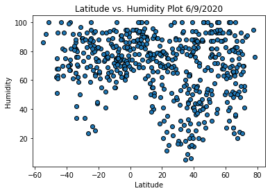
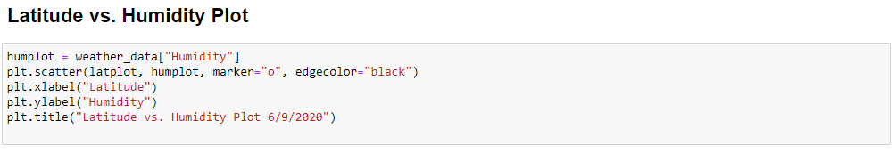

This scatter plot shows the correlation between humidities and latitudes. There are roughly 600 latitude/longitude combinations plotted.
 The x-axis is latitude, and the y-axis is the humidity index. Interestingly, there doesn't seem to be a correlation between latitude and humidity.
